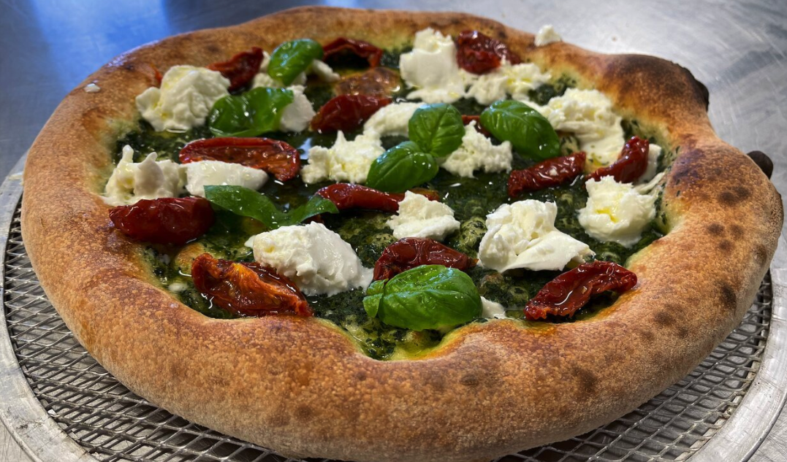

Bienvenue dans ce classement aussi savoureux qu'intéressant des 5 meilleurs pizzerias de France
Depuis toujours partenaire numéro un des Français qui ne veulent pas s’emmerder à cuisiner ou des gastronomes désireux d’inviter l’Italie dans leur bouche, la pizza n’a pas d’âge et défie les tendances. Petits et grands se régalent et chacun peut y trouver son compte.
| Classement | Nom | Localisation | Spécialité | Appât | Si vous êtes affamés, c'est là : |
|---|---|---|---|---|---|
| 5 | In Bocca Al Lupo | Paris (75) | Pizza tomates séchées/prosciutto | ||
| 4 | The Little Italy | Annecy (74) | Pizza aux 3 raclettes affinées | ||
| 3 | Dolce Vita chez Jpetto | Béziers (34) | Pizza dite "Mamma Babetta" aux aubergines/courgettes grillées | ||
| 2 | Forno Gusto | Toulouse (31) | Pizza Tartufata à la crème de truffes | ||
| 1 | Le Gusto di Napoli | Sausset-les-Pins (13) | Pizza Gusto à la crème de balsamique |  | |
| Classement | Nom | Localisation | Spécialité | Appât | Si vous êtes affamés, c'est là : |